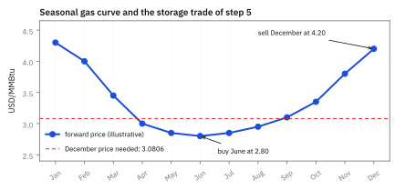

23.2 Commodity Derivatives: Gas and Power
ก๊าซเก็บได้แต่มีต้นทุน ไฟฟ้าเก็บแทบไม่ได้ ความต่างข้อเดียวนี้กำหนดวิธีตั้งราคาและวิธี hedge ทั้งหมด
จอของเทรดเดอร์แสดงราคาก๊าซ Henry Hub เดือนมิถุนายน \$2.80 ต่อ MMBtu เดือนธันวาคม \$4.20 บริษัทเช่าคลังใต้ดินพอสำหรับ 10,000 MMBtu ส่วนต่างบนจอคือ $1.40\times10{,}000=\$14{,}000$ แต่การเก็บก๊าซมีต้นทุน: ค่าอัดเข้า \$0.10 ค่าดึงออก \$0.05 ต่อ MMBtu ก๊าซหายระหว่างเก็บ 2% และต้องกู้เงินซื้อที่ 5% ต่อปีนานหกเดือน ดีลนี้ได้เท่าไรจริง และถ้าไม่ล็อกราคาขายไว้ ราคาธันวาคมต้องไม่ต่ำกว่าเท่าไร?
ลองตอบก่อนเปิดเฉลย
ได้ \$10,970 ไม่ใช่ \$14,000 ขายได้แค่ 9,800 MMBtu เพราะหาย 2% และต้นทุนรวม \$30,190 กำไรเหลือราว \$1.12 ต่อหน่วยที่ขาย จากส่วนต่างบนจอ 1.40 ถ้าไม่ล็อกราคาขาย ราคาธันวาคมต้องไม่ต่ำกว่า \$3.0806 จึงเท่าทุน ดีลที่ดีต้องขายธันวาคมล่วงหน้าตั้งแต่วันที่ซื้อ ไม่อย่างนั้นกำไรนี้คือการเดาว่าราคาจะไม่ลงเกิน 26.7%
สิ่งที่เราจะสร้าง
หุ้นถือไว้ในบัญชีได้ฟรี แต่ก๊าซต้องเช่าที่เก็บ เสียค่าอัด ค่าดึง และหายไประหว่างทาง ส่วนไฟฟ้าแทบเก็บไม่ได้เลย ต้องผลิตและใช้ในชั่วโมงเดียวกัน หน้านี้ใช้ความต่างข้อนี้อธิบายว่าทำไมราคาล่วงหน้าของสินค้าโภคภัณฑ์ไม่เดินตามสูตรของหุ้น
ครึ่งแรกเป็นเรื่องก๊าซ: คิดดีลคลังให้ครบทุกต้นทุน หาเพดานราคาล่วงหน้าจาก cash-and-carry (19.1) ล็อกราคาด้วย swap แล้วมองคลังเป็น option ด้วยสมการเดินถอยหลังของ 23.1 ครึ่งหลังเป็นเรื่องไฟฟ้า: โรงไฟฟ้าเป็น call บนส่วนต่างราคา ค่าติดเครื่องทำให้แต่ละชั่วโมงไม่แยกกัน ราคาถูกดึงกลับและกระโดด แล้วจบที่การ hedge ค่าไฟ
ศัพท์ที่ใช้ในหัวข้อนี้
- Henry Hub และ MMBtu
- Henry Hub คือจุดส่งมอบก๊าซใน Louisiana ที่ใช้เป็นราคาอ้างอิงของสัญญา futures ก๊าซในสหรัฐฯ MMBtu คือหน่วยพลังงานที่ก๊าซซื้อขายกัน (หนึ่งล้าน British thermal unit)
- Forward curve
- ราคาล่วงหน้าที่ตกลงวันนี้สำหรับส่งมอบแต่ละเดือนข้างหน้า เรียงเป็นเส้น ใช้ล็อกราคาซื้อขายในอนาคต และไม่ใช่คำพยากรณ์ราคา
- Cost of carry และ convenience yield
- Cost of carry คือต้นทุนของการถือของจริงไว้จนถึงวันส่งมอบ (ดอกเบี้ย ค่าเก็บ ของที่หาย) convenience yield คือประโยชน์ของการมีของอยู่ในมือ ซึ่งวัดตรงไม่ได้ ต้องถอยหลังจากราคาตลาด
- Swap (fixed-for-floating)
- สัญญาที่ฝั่งหนึ่งจ่ายราคาคงที่และรับราคาตลาดของแต่ละงวด ใช้ทำให้ต้นทุนหรือรายได้รู้ล่วงหน้าโดยไม่ต้องส่งของจริง
- Heat rate
- ปริมาณก๊าซ (MMBtu) ที่โรงไฟฟ้าต้องเผาเพื่อผลิตไฟ 1 MWh ใช้แปลงราคาก๊าซเป็นต้นทุนต่อหน่วยไฟ
- Spark spread
- ราคาไฟลบต้นทุนเชื้อเพลิงและต้นทุนผันแปรของการผลิตไฟหนึ่ง MWh บอกว่าชั่วโมงนั้นเดินเครื่องแล้วได้หรือเสียเท่าไร
- LMP (locational marginal price)
- ราคาไฟ ณ จุดหนึ่งของโครงข่ายในแต่ละช่วงเวลา ตลาดอย่าง PJM ประกาศทุกชั่วโมง ใช้เป็นราคาลอยตัวในสัญญาไฟฟ้า
สัญลักษณ์และหน่วย
| สัญลักษณ์ | ความหมาย | หน่วย |
|---|---|---|
| $Q$ | ปริมาณในดีลหรือในสัญญา | MMBtu หรือ MWh |
| $S,\ F_0(T)$ | ราคาซื้อวันนี้ และราคาล่วงหน้าสำหรับส่งมอบที่เวลา $T$ | \$ ต่อ MMBtu |
| $c_{\text{in}},\ c_{\text{out}},\ \ell$ | ค่าอัดเข้า ค่าดึงออก และสัดส่วนก๊าซที่หาย | \$ ต่อ MMBtu, ไม่มีหน่วย |
| $r,\ u,\ y$ | ดอกเบี้ย ค่าเก็บ และ convenience yield เป็นอัตราต่อปี | ต่อปี |
| $I,\ z$ | ก๊าซในคลัง และปริมาณที่ดึงออกในงวดนั้น (ติดลบคืออัดเข้า) | MMBtu |
| $h,\ G,\ P$ | heat rate ราคาก๊าซ และราคาไฟ | MMBtu ต่อ MWh, \$ ต่อ MMBtu, \$ ต่อ MWh |
| $\kappa,\ \theta,\ \xi$ | ความเร็วที่ราคาถูกดึงกลับ ระดับที่ถูกดึงเข้าหา และขนาด shock | ต่อปี, \$ ต่อ MMBtu, \$ ต่อ MMBtu ต่อรากปี |
ขั้นที่ 1 — ดีลคลังก๊าซ: \$14,000 บนจอเหลือเท่าไร
โจทย์ให้อะไรมาบ้าง: ซื้อ $Q=10{,}000$ MMBtu ที่ 2.80 ขายธันวาคมที่ 4.20 ค่าอัด 0.10 ต่อหน่วยที่อัด ค่าดึง 0.05 ต่อหน่วยที่ดึง ก๊าซหาย $\ell=2\%$ ดอกเบี้ยเงินกู้ซื้อ 5% ต่อปีแบบธรรมดา นานครึ่งปี ทุกต้นทุนนับ ณ วันขาย
ต้นทุนสี่ก้อนคือ ค่าก๊าซ $10{,}000(2.80)$ ค่าอัด $10{,}000(0.10)$ ค่าดึง $9{,}800(0.05)$ ซึ่งคิดเฉพาะก๊าซที่เหลือให้ดึง และดอกเบี้ย $28{,}000(0.05)(0.5)$ ของเงินที่กู้ซื้อก๊าซ ก๊าซที่หายไม่ได้แค่ขายไม่ได้ เรายังจ่ายค่าซื้อและค่าอัดของมันไปแล้วด้วย
คำตอบ: กำไร \$10,970 หรือ $10{,}970/9{,}800=\$1.12$ ต่อหน่วยที่ขาย ไม่ใช่ 1.40 ต่อหน่วยตามจอ ช่องว่าง \$3,030 คือรายได้ของก๊าซ 200 หน่วยที่หายไป $200(4.20)=\$840$ ค่าอัด \$1,000 ค่าดึง \$490 และดอกเบี้ย \$700
ตรวจเองใน 10 วินาที: $840+1{,}000+490+700=3{,}030$ และ $14{,}000-3{,}030=10{,}970$ ตรงกับการคิดรายรับลบต้นทุน
ขั้นที่ 2 — ราคาคุ้มทุน และนาฬิกาของต้นทุน
ถ้าเทรดเดอร์ซื้อก๊าซแล้วยังไม่ขายธันวาคมล่วงหน้า กำไรขึ้นกับราคาธันวาคมที่จะเกิด คำถามแรกของเจ้านายจึงเป็นราคาที่ทำให้ดีลเท่าทุน และคำถามที่สองคือเงินแต่ละก้อนจ่ายวันไหน
บรรทัดแรกเอาต้นทุนทั้งหมดหารด้วยหน่วยที่ขายได้จริง ราคาธันวาคมตกลงจาก 4.20 ได้ 26.65% ก่อนกำไรหมด สองบรรทัดล่างคือกรณีที่ค่าอัด \$1,000 ต้องจ่ายตอนอัดในเดือนมิถุนายน ไม่ใช่ตอนขาย เงินก้อนนั้นก็ต้องกู้ครึ่งปีเหมือนกัน กำไรจึงลดอีก \$25
กำไร 10,970 เป็นเงิน ณ วันขายในเดือนธันวาคม ไม่ใช่มูลค่าวันนี้ ถ้าจะเทียบกับดีลอื่นที่จ่ายเงินวันนี้ ต้องคิดลดกลับมาอีกครึ่งปี เรื่องเล็กแบบนี้เปลี่ยนคำตอบได้ทุกครั้ง
Figure 23.2a — เส้นราคาก๊าซตามฤดู และดีลของขั้นที่ 1

เส้นนี้เป็นตัวเลขตัวอย่าง ไม่ใช่ราคาจริงของปีใด ราคาเดือนมกราคม 4.30 ลงไปต่ำสุด 2.80 ในเดือนมิถุนายน แล้วขึ้นกลับเป็น 4.20 ในเดือนธันวาคม เพราะคนใช้ก๊าซทำความร้อนในหน้าหนาว ลูกศรคือดีลซื้อมิถุนายนขายธันวาคม เส้นประแดงคือราคาธันวาคมขั้นต่ำ 3.0806 ของขั้นที่ 2
Figure 23.2b — จากรายรับหน้าหนาวถึงกำไรสุทธิ

แท่งเขียวคือรายรับ \$41,160 แท่งแดงสี่แท่งคือค่าซื้อ 28,000 ค่าอัด 1,000 ค่าดึง 490 และดอกเบี้ย 700 แท่งสุดท้ายคือกำไร \$10,970 ของขั้นที่ 1 ลืมแท่งแดงแท่งใดแท่งหนึ่ง กำไรบนกระดาษก็สูงเกินจริงทันที
ขั้นที่ 3 — cash-and-carry: ทำไมราคาล่วงหน้ามีแต่เพดาน
19.1 ตั้งราคาล่วงหน้าของหุ้นด้วยกลยุทธ์ที่ไม่ใช้เงิน: กู้มาซื้อของ ถือไว้ แล้วขายล่วงหน้า กับก๊าซทำได้แค่ครึ่งเดียว เพราะฝั่งกลับต้องยืมก๊าซมาขายวันนี้ ซึ่งไม่มีใครให้ยืมก๊าซจากใต้ดิน ผลคือราคาล่วงหน้ามีเพดาน แต่ไม่มีพื้น
$V_0$ คือวันนี้: กู้เงินมาซื้อก๊าซ จึงไม่ใช้เงินตัวเองเลย $V_T$ คือวันส่งมอบ: ส่งก๊าซที่เหลือตามราคาล่วงหน้า แล้วจ่ายคืนต้นทุนทั้งหมด $C_{\text{carry}}$ (ค่าก๊าซ ค่าอัดดึง ดอกเบี้ย) ถ้าใครก็เช่าคลังได้ไม่จำกัด ผลนี้รู้แน่ตั้งแต่วันนี้ ถ้าเป็นบวกคือเงินฟรี ทุกคนจะทำจนราคาธันวาคมไม่เกิน 3.0806
แต่จอแสดง 4.20 เกินเพดานไปมาก เพราะคลังมีจำกัด คนที่ไม่มีคลังทำ cash-and-carry ไม่ได้ ส่วนต่าง \$10,970 จึงเป็นค่าเช่าที่คลังขนาด 10,000 MMBtu ทำได้ในรอบนี้ ถ้าผู้ให้เช่าคิดค่าเช่าเกินนี้ ดีลก็ไม่คุ้ม
บรรทัดสุดท้ายเป็นนิยาม ตลาดเขียนราคาเป็นอัตรา: $r$ คือดอกเบี้ย $u$ คือค่าเก็บ และ $y$ คือตัวที่ทำให้บรรทัดนั้นเท่ากับราคาตลาดพอดี เรียกว่า convenience yield
ตัวอย่างใน Figure 23.2a มกราคม 4.30 ไปเมษายน 3.00 ให้ $\ln(3.00/4.30)/0.25=-1.44$ ต่อปี แปลว่า $y$ สูงกว่า $r+u$ ถึง 144% ต่อปี ในหน้าหนาว ของในมือมีค่ามากจนไม่มีใครอยากเก็บไว้ขายเมษายน
ขั้นที่ 4 — ล็อกราคาด้วย swap: ราคาคงที่คือค่าเฉลี่ยถ่วงของราคาล่วงหน้า
ดีลของขั้นที่ 1 ต้องล็อกราคาขาย ผู้ใช้ก๊าซอย่างโรงงานก็ต้องล็อกราคาซื้อหลายเดือนพร้อมกัน เครื่องมือมาตรฐานคือ swap ฝั่งที่จ่ายคงที่ $K$ และรับราคาตลาดจะได้ $Q(F_T-K)$ ในแต่ละงวด ราคา $K$ ที่ยุติธรรมคือราคาที่ทำให้สัญญามีค่าศูนย์ในวันที่เซ็น
swap คือมัดของสัญญาล่วงหน้าหลายงวด แต่ละงวดมีค่าวันนี้เท่ากับส่วนต่างระหว่างราคาล่วงหน้ากับ $K$ คูณตัวคูณคิดลด $D_i$ ปริมาณเท่ากันทุกงวดจึงตัดออก ราคาคงที่เป็นค่าเฉลี่ยของราคาล่วงหน้าที่ถ่วงด้วยตัวคูณคิดลด
ตัวอย่างนี้สามเดือน ราคาล่วงหน้า 3.00, 3.60 และ 4.20 ได้ 3.5980 ต่ำกว่าค่าเฉลี่ยธรรมดา 3.60 เล็กน้อย เพราะเดือนที่ราคาสูงอยู่ไกลกว่าและถูกคิดลดมากกว่า swap ไม่ได้ทำให้ก๊าซถูกลง มันทำให้รู้ราคาล่วงหน้า
ขั้นที่ 5 — คลังคือ option: สมการเดินถอยหลังของคลัง
ถ้าไม่ล็อกทุกอย่างตั้งแต่วันแรก เจ้าของคลังเลือกได้ทุกงวดว่าจะอัด ดึง หรืออยู่เฉย ๆ นี่คือสิทธิ์เลือกแบบ 23.1 แต่สถานะมีสองตัว คือราคากับก๊าซในคลัง ขั้นนี้เขียนสมการแล้วทดลองกับคลังเล็กที่สุด จุหนึ่งหน่วยและว่างอยู่
$z$ คือปริมาณที่ดึงออก ($z$ ติดลบคืออัดเข้า) ก้อน $Pz$ คือเงินจากการซื้อขายงวดนี้ $c\lvert z\rvert$ คือค่าอัดหรือดึง และก้อนหลังคือค่าของคลังงวดหน้าที่คิดลดด้วย $\delta$ ข้อจำกัดคือคลังต้องไม่ติดลบและไม่เกินความจุ $C$ และอัดหรือดึงได้ไม่เกินท่อ $a,\ b$ ข้อจำกัดนี้เองที่ทำให้การตัดสินใจวันนี้ผูกกับวันหน้า
ตัวอย่าง: วันนี้ราคา 3.00 งวดหน้า 4.50 หรือ 2.50 ด้วยน้ำหนัก 0.5 เท่ากัน ($\delta=0.95$, $c=0.10$) งวดหน้าเป็นงวดสุดท้าย ทั้งสองกิ่งดึงขายหมด ถ่วงได้ 3.40 คิดลดได้ 3.23 ซื้ออัดวันนี้เสีย 3.10 เหลือ 0.13
ค่านี้เท่ากับการล็อกด้วยราคาล่วงหน้า 3.50 พอดี $0.95(3.50-0.10)-3.10=0.13$ เพราะไม่มีกิ่งไหนที่ไม่คุ้มขาย สิทธิ์เลือกจึงไม่เพิ่มค่า สิทธิ์เลือกเพิ่มค่าเมื่อมีกิ่งที่ถ้าถูกบังคับทำจะขาดทุน ซึ่งโรงไฟฟ้าในขั้นที่ 7 แสดงให้เห็น
ขั้นที่ 6 — โรงไฟฟ้า: heat rate และ spark spread
ข้ามมาฝั่งไฟฟ้า โรงไฟฟ้าก๊าซเปลี่ยนก๊าซเป็นไฟ ต้นทุนต่อ MWh จึงเป็นก๊าซที่เผาคูณราคาก๊าซ บวกต้นทุนผันแปรอื่น สามบรรทัดแรกเป็นนิยาม ตัวเลขเป็นตัวอย่างสมมติ: โรงไฟฟ้า 100 MW เดิน 5 ชั่วโมงช่วงราคาสูง heat rate 7 ก๊าซ \$3.00 ต้นทุนอื่น \$5 ต่อ MWh ราคาไฟ \$90 ต่อ MWh
max ในบรรทัดที่สามคือสิทธิ์ที่จะไม่เดินเครื่อง รูปเดียวกับ $\max(X-I,0)$ ของ 23.1 ทุกประการ โรงไฟฟ้าจึงเป็น call บน spark spread MW เป็นหน่วยกำลัง ต้องคูณชั่วโมงจึงเป็นพลังงาน MWh ถ้าลืมคูณ 5 กำไรจะเหลือ 6,400 ผิดห้าเท่า บรรทัดสุดท้ายบอกว่าก๊าซต้องแพงเกิน 12.14 ต้นทุนจึงแซงราคาไฟ
Figure 23.2c — โรงไฟฟ้าเดินเครื่องเมื่อไร

แกนนอนคือราคาก๊าซ 1 ถึง 13 ดอลลาร์ต่อ MMBtu เส้นแดงคือต้นทุน $7G+5$ ต่อ MWh เส้นประเขียวคือราคาไฟ 90 พื้นที่เขียวคือช่วงที่เดินเครื่องแล้วกำไร ที่ก๊าซ 3.00 ต้นทุน 26 ลูกศรคือ spread 64 คูณ 500 MWh ได้ \$32,000 เส้นจุดที่ 12.14 คือจุดที่โรงไฟฟ้าเลิกเดิน
ขั้นที่ 7 — ชั่วโมงที่ยังไม่รู้ราคา: ค่าของสิทธิ์ที่จะไม่เดิน
โจทย์ให้อะไรมาบ้าง: โรงไฟฟ้าของขั้นที่ 6 ราคาไฟชั่วโมงหน้าจะเป็น 90 หรือ 6 ด้วยน้ำหนักตั้งราคา 0.5 เท่ากัน (ราคาล่วงหน้าของชั่วโมงนั้นจึงเป็น 48) ต้นทุนยังเป็น 26 spread จึงเป็น +64 หรือ −20 ห่างกันชั่วโมงเดียวจึงไม่คิดลด
คำตอบ: ถ้าขายไฟล่วงหน้าแล้วต้องเดินแน่ ได้ \$11,000 ถ้าเก็บสิทธิ์ไว้ตัดสินใจหลังเห็นราคา ได้ \$16,000 ส่วนต่าง \$5,000 คือค่าของการไม่ต้องเดินในกิ่งที่ขาดทุน 20 ต่อ MWh
ตรวจเองใน 10 วินาที: ใช้เอกลักษณ์ $\max(x,0)=x+\max(-x,0)$ ของ 23.1 ขั้นที่ 8 ก้อนแรกคือค่าเฉลี่ย 22 คูณ 500 ก้อนหลังคือ put บน spread $500(0.5)(20)$ รวม 16,000 ตรงกัน
ขั้นที่ 8 — ค่าติดเครื่องทำให้แต่ละชั่วโมงไม่แยกกัน
ขั้นที่ 7 มองแต่ละชั่วโมงเป็น call แยกกัน ใช้ได้เมื่อเปิดปิดเครื่องได้ฟรี แต่กังหันก๊าซขนาดใหญ่ต้องเผาเชื้อเพลิงอุ่นเครื่องหลายชั่วโมงก่อนจ่ายไฟได้ ตัวอย่างสมมติ: เครื่องเปิดอยู่ ชั่วโมงนี้เดินแล้วขาดทุน \$3,000 ชั่วโมงหน้าเดินได้ \$12,000 ค่าปิดเครื่อง $C_d=1{,}000$ ค่าติดเครื่อง $C_u=8{,}000$ สถานะเครื่องจึงต้องอยู่ในสมการ
สองบรรทัดแรกคือกฎเกมลูกเต๋าของ 23.1 ที่มีสองสถานะ เครื่องที่เปิดอยู่เลือกเดินต่อ (ได้ $\pi_t$) หรือปิด (เสีย $C_d$) เครื่องที่ปิดอยู่เลือกปิดต่อหรือติดเครื่อง (เสีย $C_u$ แล้วได้ $\pi_t$) หลังชั่วโมงที่ 2 ไม่มีอะไรเหลือ ค่าจึงเป็นศูนย์
คำตอบคือยอมขาดทุน 3,000 แล้วเดินต่อ ได้ 9,000 ส่วนกฎ “ปิดเมื่อ spread ติดลบ” ได้แค่ 3,000 และการมองเป็น call แยกชั่วโมงให้ $\max(-3{,}000,0)+\max(12{,}000,0)=12{,}000$ เกินค่าจริง 3,000 ช่วงราคาที่เจ้าของยอมเดินขาดทุนเพื่อเลี่ยงค่าติดเครื่องเรียกว่า hysteresis
ขั้นที่ 9 — ราคาก๊าซถูกดึงกลับ: ความผันผวนมีเพดาน
ราคาหุ้นในแบบจำลองของบทที่ 13 เดินไปได้เรื่อย ๆ แต่ราคาก๊าซมีแรงดึงกลับ เมื่อราคาสูง ผู้ผลิตขุดเพิ่มและผู้ใช้ประหยัด ราคาจึงไหลกลับ เราแยกส่วนที่รู้ล่วงหน้าตามฤดู $s(t)$ ออกก่อน แล้วให้ส่วนที่เหลือ $X_t$ เดินแบบ Vasicek ของ 13.4 แล้วหาคำตอบของสมการ
จังหวะสำคัญคือคูณด้วย $e^{\kappa t}$ ซึ่งไม่สุ่ม กฎผลคูณของ 13.5 จึงไม่มีพจน์แก้ของ Itô ก้อน $X_t\,dt$ หักล้างกันพอดี เหลือแต่ก้อนที่อินทิเกรตได้ตรง ๆ บรรทัด variance ใช้ Itô isometry ของ 13.3 ค่ากำลังสองของสิ่งที่คูณ $dW$ อินทิเกรตตามเวลา
ตัวอย่างสมมติ $\kappa=2$ ต่อปี $\xi=0.8$: variance มีเพดาน $0.64/4=0.16$ คือ SD \$0.40 ต่อ MMBtu ครบหนึ่งปีได้ $0.16(1-e^{-4})=0.1571$ (SD \$0.396) ถ้าไม่มีแรงดึงกลับจะได้ $0.64$ (SD \$0.80) ครึ่งหนึ่งของส่วนเบี่ยงหายใน $\ln2/2=0.35$ ปี หรือราวสี่เดือน
ขั้นที่ 10 — ราคาไฟกระโดด: เติมก้อน jump
ไฟฟ้าเก็บไม่ได้ วันที่อากาศร้อนจัดหรือโรงไฟฟ้าใหญ่หยุดกะทันหัน ราคาจึงพุ่งหลายเท่าในชั่วโมงเดียว แบบจำลองที่มีแต่ $dW$ ให้เส้นทางต่อเนื่อง ปรับตัวเลขอย่างไรก็สร้างการพุ่งแบบนั้นไม่ได้ จึงต้องเติมก้อนที่เป็นศูนย์เกือบตลอดเวลาแล้วกระโดดเป็นบางครั้ง นี่คือนิยามของแบบจำลองที่ใช้ใน Figure 23.2d บนลอการิทึมของราคา
$y_h$ คือลอการิทึมของราคาในชั่วโมงที่ $h$ สามก้อนแรกคือแรงดึงกลับแบบขั้นที่ 9 ในเวลารายชั่วโมง ก้อน $J\,N_h$ คือ jump: $N_h$ นับว่าชั่วโมงนั้นเกิดการกระโดดกี่ครั้ง (เฉลี่ย 0.03 ครั้งต่อชั่วโมง) แต่ละครั้งบวก $\ln3$ ให้ลอการิทึม คือราคาคูณ 3
หลังกระโดด ส่วนเกินของลอการิทึม $e_h$ หายไป 25% ทุกชั่วโมง เพราะแรงดึงกลับ $\kappa=0.25$ ครึ่งหนึ่งหายใน $h_{1/2}=2.41$ ชั่วโมง ผ่านไป 8 ชั่วโมงราคายังสูงกว่าปกติ 11.6% ใน 48 ชั่วโมงคาดว่าจะเกิดการกระโดด $0.03(48)=1.44$ ครั้ง โอกาสไม่เกิดเลยคือ $e^{-1.44}=0.237$
Figure 23.2d — การกระโดดครั้งเดียวครองราคาสองวัน

จำลอง 48 ชั่วโมงด้วยแบบจำลองของขั้นที่ 10 (seed 13) สองเส้นใช้ shock $\varepsilon_h$ ชุดเดียวกัน เส้นน้ำเงินตัดก้อน jump ออกจึงแกว่งใกล้ 70 เส้นแดงมีก้อน jump ตามที่ป้ายของรูปบอก ราคาคูณ 3 หนึ่งครั้ง แล้วไหลกลับตามแรงดึง 25% ต่อชั่วโมง ป้ายบนรูปบอกชั่วโมงและราคาที่พุ่งถึง
ขั้นที่ 11 — hedge ค่าไฟ: จ่ายคงที่ รับลอยตัว
โจทย์ให้อะไรมาบ้าง: โรงงานใช้ไฟ 500 MWh ในช่วงราคาสูง ซื้อตามราคาตลาด LMP ทำ swap จ่ายคงที่ $K=75$ รับ LMP บน 500 MWh ราคาที่เกิดจริงคือ 90 จากนั้นดูกรณีที่ใช้ไฟจริง 600 MWh
คำตอบ: ค่าไฟสุทธิคือ \$37,500 เท่ากับซื้อที่ 75 พอดี ไม่ว่าราคาตลาดจะเป็นเท่าไร แต่ถ้าใช้ 600 MWh ส่วนเกิน 100 MWh ไม่มี hedge ต้องจ่ายราคาตลาดเต็ม ค่าไฟจึงเป็น \$46,500 ไม่ใช่ \$45,000
ตรวจเองใน 10 วินาที: ที่ LMP 75 swap จ่ายศูนย์ ค่าไฟ 500 MWh คือ 37,500 เท่ากับกรณี 90 ทุกบาทที่ค่าไฟแพงขึ้นถูกชดเชยด้วย swap สิ่งที่ swap แก้ไม่ได้คือปริมาณที่ไม่ตรง และจุดส่งมอบหรือชั่วโมงที่ไม่ตรงกับดัชนีในสัญญา
Figure 23.2e — hedge ราคาไฟแบบจ่ายคงที่ รับลอยตัว

แกนนอนคือ LMP 0 ถึง 200 ดอลลาร์ต่อ MWh แกนตั้งคือเงินที่ swap จ่าย $500(\text{LMP}-75)$ เป็นพันดอลลาร์ เส้นตรงตัดศูนย์ที่ 75 จุดดำคือ LMP 90 ได้ 7,500 ของขั้นที่ 11 ต่ำกว่า 75 เส้นติดลบ คือโรงงานจ่ายเงินให้คู่สัญญา ซึ่งถูกชดเชยด้วยค่าไฟที่ถูกลง
ขั้นที่ 12 — ราคาขายลดได้แค่ไหนก่อนกำไรหาย
เทียบสองธุรกิจของหน้านี้ภายใต้คำถามเดียว ถ้าราคาขายลดลง $x$ จากตัวอย่าง กำไรเป็นอย่างไร ดีลคลังที่ซื้อก๊าซแล้วแต่ยังไม่ล็อกราคาขาย เทียบกับโรงไฟฟ้าของขั้นที่ 6
ดีลคลังขาดทุนเป็นเส้นตรงเมื่อราคาธันวาคมลดเกิน 26.7% เพราะซื้อก๊าซไปแล้ว ไม่เหลือสิทธิ์เลือก ส่วนโรงไฟฟ้ากำไรลดลงจนเป็นศูนย์ที่ราคาไฟ 26 แล้วหยุดอยู่ที่ศูนย์ ไม่ติดลบ เพราะยังเลือกไม่เดินเครื่องได้ (ในตัวอย่างนี้ไม่คิดค่าติดเครื่อง)
Figure 23.2f — ราคาขายลดได้แค่ไหนก่อนกำไรหาย

แกนนอนคือการเปลี่ยนของราคาขายจากตัวอย่าง −80% ถึง +20% แกนตั้งคือกำไรเป็นพันดอลลาร์ เส้นฟ้าคือคลังก๊าซ ตัดศูนย์ที่ −26.7% (ราคาธันวาคม 3.0806) แล้วติดลบต่อ เส้นส้มคือโรงไฟฟ้า เป็นศูนย์ตั้งแต่ −71.1% (ราคาไฟ 26) ลงไป จุดดำคือ 10,970 และ 32,000 ที่ราคาตามตัวอย่าง
คำถามที่ควรถามออกมาดัง ๆ
ถ้าส่วนต่างเกินต้นทุนการเก็บ ทำไมไม่มีใครมาเก็บจนส่วนต่างหาย? เพราะคลังใต้ดินมีจำกัดและสร้างใหม่ใช้เวลาหลายปี ส่วนต่างที่เหลือจึงตกเป็นค่าเช่าของเจ้าของคลัง ขั้นที่ 3 บอกว่ารอบนี้คือ \$10,970 ต่อ 10,000 MMBtu
ทำไมไม่ใช้ Black–Scholes กับไฟฟ้าตรง ๆ? Black–Scholes สร้าง option ซ้ำด้วยการถือของอ้างอิงแล้วปรับสัดส่วนไปเรื่อย ๆ แต่ไฟฟ้าของชั่วโมงหน้าถือไว้ไม่ได้ ราคาไฟแต่ละชั่วโมงจึงเป็นสินค้าคนละตัว และราคายังถูกดึงกลับกับกระโดด ซึ่งผิดสมมติฐานของ 14.2 ทั้งสองข้อ
ราคาติดลบเกิดขึ้นจริงไหม? เกิด วันที่ 20 เมษายน 2020 สัญญาน้ำมัน WTI ส่งมอบเดือนพฤษภาคมปิดที่ −\$37.63 ต่อบาร์เรล เพราะที่เก็บเต็ม ราคาไฟติดลบได้เมื่อลมหรือแดดผลิตเกินความต้องการและโรงไฟฟ้าบางแห่งลดกำลังไม่ได้ แบบจำลองของขั้นที่ 10 ที่คูณราคาไม่มีทางให้ราคาติดลบ ต้องใช้แบบจำลองที่บวกลบราคาตรง ๆ
ความผิดที่ให้คำตอบผิดแบบเงียบ ๆ
อ่านส่วนต่างบนจอเป็นกำไร: \$14,000 บนจอเหลือ \$10,970 หลังของหาย ค่าอัดดึง และดอกเบี้ย และเหลือ \$10,945 ถ้าค่าอัดจ่ายตอนอัด นาฬิกาของเงินแต่ละก้อนต้องตรงกับวันที่จ่ายจริง
ถือว่าราคาล่วงหน้าคือคำพยากรณ์: ราคาธันวาคม 4.20 สะท้อนความขาดแคลนคลัง convenience yield และ risk premium ไม่ใช่ราคาที่คาดว่าจะเกิด ใช้มันล็อกราคา ไม่ใช่เดาราคา
ลืมคูณชั่วโมง: 100 MW ไม่ใช่ 100 MWh กำไรของขั้นที่ 6 จะกลายเป็น 6,400 แทน 32,000
hedge ที่ Henry Hub แต่ส่งมอบที่อื่น: ราคาก๊าซในพื้นที่ที่โรงไฟฟ้าซื้อจริงอาจห่างจาก Henry Hub มากในวันที่ท่อแน่น hedge ลดความเสี่ยงของราคาอ้างอิงได้ แต่ส่วนต่างระหว่างสองจุด (basis) ยังอยู่
ตีราคาโรงไฟฟ้าเป็น call แยกชั่วโมง: ขั้นที่ 8 ให้ 12,000 แทนค่าจริง 9,000 ยิ่งค่าติดเครื่องสูง ยิ่งประเมินเกิน
ใช้ทำอะไรบนโต๊ะจริง
เจ้าของคลังก๊าซใช้สมการของขั้นที่ 5 ตั้งราคาค่าเช่าคลังและตัดสินใจอัดดึงรายวัน โดยล็อกส่วนต่างตามฤดูด้วย futures ส่วนบริษัทไฟฟ้าและเทรดเดอร์ใช้สมการของขั้นที่ 8 ตีราคาสัญญาเช่าโรงไฟฟ้า (tolling) ที่ผู้เช่าจ่ายค่าเช่าคงที่แล้วได้สิทธิ์สั่งเดินเครื่อง โรงงานที่ใช้ไฟมากทำ swap แบบขั้นที่ 11 เพื่อให้งบต้นทุนรู้ล่วงหน้า
สามโจทย์ตรวจความเข้าใจ
1. ดีลคลังของขั้นที่ 1 แต่ก๊าซหาย 3% และราคาธันวาคม \$4.00 กำไรเป็นเท่าไร และราคาคุ้มทุนเป็นเท่าไร?
เฉลย
ขายได้ $10{,}000(0.97)=9{,}700$ รายรับ $9{,}700(4.00)=38{,}800$ ต้นทุน $28{,}000+1{,}000+9{,}700(0.05)+700=30{,}185$ กำไร \$8,615 หรือ \$0.89 ต่อหน่วยที่ขาย ราคาคุ้มทุน $30{,}185/9{,}700=\$3.1119$ ของหายเพิ่ม 1% กับราคาลด 0.20 กินกำไรไป \$2,355
2. ในขั้นที่ 8 ค่าติดเครื่องต้องต่ำกว่าเท่าไร การปิดเครื่องชั่วโมงนี้แล้วติดใหม่จึงคุ้มกว่าการเดินต่อ?
เฉลย
ปิดแล้วติดใหม่ได้ $-1{,}000-C_u+12{,}000$ เดินต่อได้ 9,000 ปิดคุ้มกว่าเมื่อ $11{,}000-C_u\gt9{,}000$ คือ $C_u\lt2{,}000$ ซึ่งเท่ากับขาดทุนที่เลี่ยงได้ 3,000 ลบค่าปิดเครื่อง 1,000 ที่ $C_u=8{,}000$ ห่างจากจุดนั้นมาก จึงเดินต่อ
3. โรงไฟฟ้าของขั้นที่ 6 แต่ heat rate เป็น 8 ต้นทุน spread กำไร และราคาก๊าซที่ทำให้เลิกเดินเป็นเท่าไร?
เฉลย
$MC=8(3.00)+5=29$ spread $90-29=61$ กำไร $500(61)=\$30{,}500$ ก๊าซต้องแพงเกิน $(90-5)/8=10.625$ จึงเลิกเดิน โรงไฟฟ้าที่เปลืองก๊าซกว่าเสียทั้งกำไรและเสียช่วงที่ยังคุ้มเดิน
คำนวณซ้ำด้วย JavaScript
โค้ดนี้คิดดีลคลังก๊าซ ราคาคงที่ของ swap คลังสองกิ่ง โรงไฟฟ้า ค่าของสิทธิ์ที่จะไม่เดิน การเดินเครื่องที่มีค่าติดเครื่อง เพดาน variance ของราคาที่ถูกดึงกลับ การหายของ jump และ hedge ค่าไฟ แล้วพิมพ์ตัวเลขหลักออกมาหนึ่งบรรทัด
function finite(name, x) {
if (typeof x !== 'number' || !Number.isFinite(x)) throw new TypeError(`${name} must be a finite number`);
return x;
}
function nonNegative(name, x) {
if (finite(name, x) < 0) throw new RangeError(`${name} must not be negative`);
return x;
}
// Summer-to-winter storage deal: buy Q, lose a fraction in storage, sell the rest; cash counted on the sale date.
function storageDeal({Q, buy, sell, cin, cout, r, T, loss}) {
for (const [k, v] of Object.entries({Q, buy, sell, cin, cout, r, T})) nonNegative(k, v);
if (finite('loss', loss) < 0 || loss >= 1) throw new RangeError('loss must be in 0 to 1');
const sold = Q * (1 - loss);
const cost = Q * buy + Q * cin + sold * cout + Q * buy * r * T;
return {sold, revenue: sold * sell, cost, profit: sold * sell - cost, perUnit: (sold * sell - cost) / sold, breakeven: cost / sold};
}
// Fixed price of a swap: the discount-weighted average of the forward prices (equal volumes).
function swapFixed(discount, forward) {
if (!Array.isArray(discount) || discount.length === 0 || discount.length !== forward.length) throw new RangeError('discount and forward need the same non-empty length');
let num = 0, den = 0;
discount.forEach((d, i) => { nonNegative('discount', d); num += d * finite('forward', forward[i]); den += d; });
return num / den;
}
// One-period storage: empty unit today, sell next period in one of two branches (weights w, 1 - w).
function storageStep({spot, up, down, w, delta, move}) {
if (!(w > 0 && w < 1)) throw new RangeError('w must be strictly between 0 and 1');
const next = w * Math.max(0, up - move) + (1 - w) * Math.max(0, down - move);
return {expectedNext: next, value: Math.max(0, -spot - move + delta * next)};
}
// Gas plant: cost per MWh, spark spread and profit for a block of MW over hours.
function plant({heatRate, gas, varCost, power, MW, hours}) {
const cost = nonNegative('heatRate', heatRate) * nonNegative('gas', gas) + nonNegative('varCost', varCost);
const mwh = nonNegative('MW', MW) * nonNegative('hours', hours);
return {mwh, cost, spread: power - cost, profit: mwh * Math.max(power - cost, 0), gasBreakeven: (power - varCost) / heatRate};
}
// Hourly profits with a start-up cost Cu and a shut-down cost Cd: best value when the plant starts "on".
function dispatch(profits, Cu, Cd) {
nonNegative('Cu', Cu); nonNegative('Cd', Cd);
let on = 0, off = 0; // value after the last hour
for (let h = profits.length - 1; h >= 0; h--) {
const p = finite('profit', profits[h]);
[on, off] = [Math.max(p + on, -Cd + off), Math.max(off, -Cu + p + on)];
}
return on;
}
const deal = storageDeal({Q: 10000, buy: 2.80, sell: 4.20, cin: 0.10, cout: 0.05, r: 0.05, T: 0.5, loss: 0.02});
const step = storageStep({spot: 3.00, up: 4.50, down: 2.50, w: 0.5, delta: 0.95, move: 0.10});
const p = plant({heatRate: 7, gas: 3.00, varCost: 5, power: 90, MW: 100, hours: 5});
const kappa = 2, xi = 0.8;
console.log(JSON.stringify({
deal, screen: 1.40 * 10000, injectionFinanced: deal.profit - 1000 * 0.05 * 0.5,
swap: swapFixed([0.995, 0.990, 0.985], [3.00, 3.60, 4.20]),
storage: step, intrinsic: 0.95 * (3.50 - 0.10) - 3.10,
plant: p,
hourCommit: p.mwh * (0.5 * 64 + 0.5 * -20), hourOption: p.mwh * (0.5 * 64 + 0.5 * 0),
keepOn: dispatch([-3000, 12000], 8000, 1000), stripOfCalls: Math.max(-3000, 0) + Math.max(12000, 0),
ouCeiling: xi * xi / (2 * kappa), ouOneYear: xi * xi / (2 * kappa) * (1 - Math.exp(-2 * kappa)), halfLife: Math.log(2) / kappa,
jumpHalfLifeHours: Math.log(2) / -Math.log(0.75), jumpAfter8h: Math.exp(Math.log(3) * 0.75 ** 8),
hedge: 500 * (90 - 75), bill: 500 * 90 - 500 * (90 - 75), bill600: 600 * 90 - 500 * (90 - 75),
storageFall: 30190 / 9800 / 4.20 - 1, plantFall: 26 / 90 - 1
}));ที่มาที่ไป
ตลาดสัญญาล่วงหน้าของสินค้าเริ่มจาก Chicago Board of Trade ในปี 1848 ซึ่งให้ชาวนาและพ่อค้าธัญพืชตกลงราคาก่อนส่งของ ก๊าซธรรมชาติของสหรัฐฯ ถูกคุมราคาอยู่หลายทศวรรษ NYMEX เปิดสัญญา futures ก๊าซส่งมอบที่ Henry Hub ในปี 1990 และคำสั่ง Order 636 ของ FERC ในปี 1992 แยกบริการขนส่งทางท่อออกจากการขายก๊าซ ทำให้ราคาก๊าซเป็นตลาดเต็มตัว
ฝั่งไฟฟ้า คำสั่ง Order 888 ของ FERC ในปี 1996 เปิดให้ผู้ผลิตรายอื่นใช้สายส่งได้ ตลาดอย่าง PJM เริ่มประกาศราคาตามจุดในปลายทศวรรษ 1990 ราคาที่กระโดดสุดขั้วยังเกิดขึ้นเป็นระยะ เช่นพายุหิมะในเท็กซัสเดือนกุมภาพันธ์ 2021 ที่ราคาไฟค้างอยู่ที่เพดาน \$9,000 ต่อ MWh หลายวัน
ข้อจำกัด: วิธีนี้สมมติอะไร และของจริงเป็นอย่างไร
| สมมติอะไร | ของจริง | ผลเวลาใช้งาน |
|---|---|---|
| ราคางวดหน้ามีสองกิ่ง ตัวแปรเดียว | คลังขึ้นกับราคาหลายเดือน โรงไฟฟ้าขึ้นกับทั้งราคาก๊าซและไฟ | ต้นไม้หลายตัวแปรโตเร็วมาก ต้องใช้ simulation กับ regression แทน |
| hedge ที่ราคาอ้างอิงหนึ่งจุด | ส่งมอบจริงที่จุดอื่นและชั่วโมงอื่น | ส่วนต่าง basis และปริมาณยังเป็นความเสี่ยงของเราเอง |
| แบบจำลองคูณราคา ราคาจึงไม่ติดลบ | ไฟฟ้าและน้ำมันติดลบได้ | ช่วงราคาต่ำสุดถูกประเมินผิด ต้องใช้แบบจำลองแบบบวก |
| พารามิเตอร์ $\kappa$, $\xi$ และ jump คงที่ | เปลี่ยนตามฤดูและตามสภาพระบบไฟฟ้า | ต้องประมาณใหม่บ่อย และทดสอบกับเหตุการณ์สุดขั้ว |
สิ่งที่ควรตอบได้หลังอ่าน
- ส่วนต่าง \$14,000 บนจอเหลือกำไรจริง \$10,970 เมื่อหักของหาย ค่าอัดดึง และดอกเบี้ย และราคาคุ้มทุนคือ 3.0806
- cash-and-carry ให้ราคาล่วงหน้าของก๊าซแค่เพดาน เพราะยืมก๊าซมาขายไม่ได้ ส่วนที่เกินเพดานคือค่าเช่าคลัง
- ราคาคงที่ของ swap คือค่าเฉลี่ยของราคาล่วงหน้าที่ถ่วงด้วยตัวคูณคิดลด (3.5980)
- โรงไฟฟ้าคือ call บน spark spread สิทธิ์ที่จะไม่เดินมีค่า (16,000 เทียบ 11,000) แต่ค่าติดเครื่องทำให้ชั่วโมงไม่แยกกัน (9,000 ไม่ใช่ 12,000)
- ราคาก๊าซถูกดึงกลับจน variance มีเพดาน $\xi^2/(2\kappa)$ ราคาไฟต้องมี jump และ hedge แก้ความเสี่ยงราคาได้ แต่ไม่แก้ปริมาณกับ basis
บทที่ 24 ถามคำถามที่ต่างออกไป: ถ้าตลาดตั้งราคาทุกอย่างได้ถูกต้องแล้ว ยังมีกำไรเหลือให้ใครอีกไหม และมนุษย์ทำให้ราคาคลาดจากค่าที่ควรเป็นได้อย่างไร